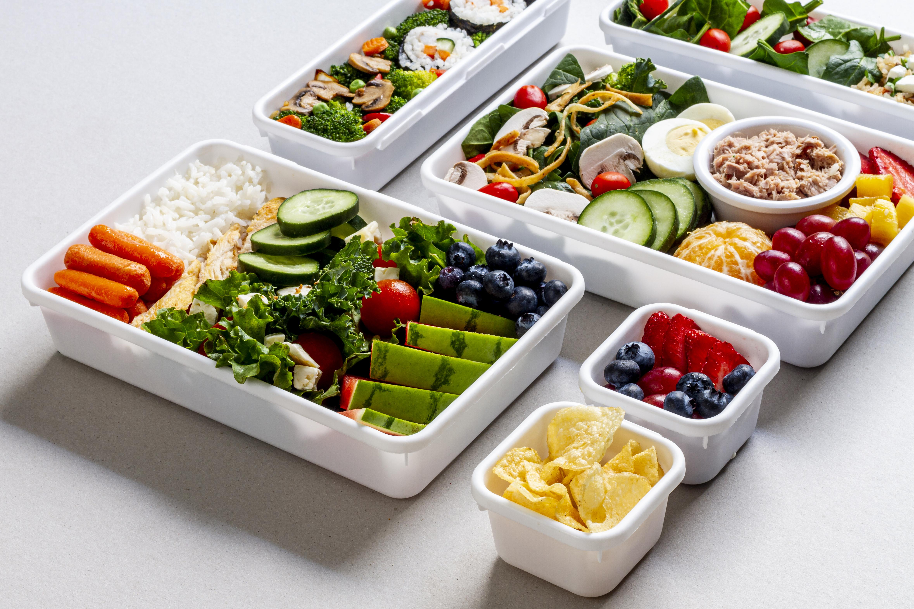

Makanan Sehat dan Bergizi
Makanan sehat adalah makanan yang mengandung berbagai jenis zat gizi yang dibutuhkan tubuh. Tubuh manusia memerlukan beragam nutrisi agar tetap sehat dan tumbuh optimal. Mengonsumsi makanan bergizi dibarengi dengan pola hidup sehat. Pola makan yang sehat akan membantu Anda mencapai berat badan ideal Selain itu, mengonsumsi makanan sehat juga mengurangi risiko penyakit kronis seperti diabetes, penyakit kardiovaskular, dan kanker lainnya. Mengonsumsi makanan bergizi tidak hanya meningkatkan kesehatan fisik, tetapi juga dapat memengaruhi suasana hati. Kriteria pangan sehat dan bergizi adalah pangan yang mengandung nilai gizi yang dibutuhkan tubuh dalam jumlah seimbang, seperti vitamin, mineral, karbohidrat, protein, lemak, kalsium, serat, dan air. Makan sehat bukan berarti Anda harus menghilangkan makanan favorit atau makanan tertentu dari program makan Anda.
Kriteria Makanan Sehat
1. Karbohidrat
Kandungan karbohidrat bisa kita dapatkan dari beragam jenis makanan. Karbohidrat bisa kita peroleh dari berbagai jenis makanan, antara lain kentang, ubi jalar, gandum, nasi merah, dan jagung Asupan karbohidrat harus diperhatikan karena 60 persen kalori yang dikonsumsi terdiri dari karbohidrat, dan karbohidrat juga merupakan sumber energi utama tubuh manusia.
2. Protein
Tubuh manusia membutuhkan asupan protein 10-15% dari asupan protein harian. Ada berbagai macam sumber protein yang tersedia, baik nabati maupun hewani Asupan protein dapat dicapai dengan mengonsumsi telur, ikan, ayam, bebek, gandum, kacang almond, dan kedelai. Protein yang masuk ke dalam tubuh diolah menjadi asam amino yang berperan dalam pembentukan otot, organ tubuh, kulit, dan rambut Di sisi lain, fungsi hormon juga diatur oleh protein
3. Lemak
Lemak terbagi menjadi dua, yaitu lemak jenuh yang bisa didapat dari mengonsumsi daging. Anda bisa mendapatkan minyak kelapa, susu, dan lemak tak jenuh dengan mengonsumsi ikan, alpukat, dan kacang-kacangan. Pada dasarnya lemak merupakan sumber energi yang baik dan diperlukan untuk kesehatan tubuh. Namun, untuk menghindari obesitas, sebaiknya konsumsi lemak dalam jumlah yang cukup dan tidak berlebihan Obesitas terjadi ketika tubuh Anda mengonsumsi terlalu banyak kalori
4. Vitamin
Untuk meningkatkan daya tahan tubuh, vitamin mutlak diperlukan. Vitamin sangat beragam dan bisa didapatkan dari semua makanan yang Anda konsumsi setiap hari. Vitamin merupakan komponen penting yang terdapat dalam makanan, namun dapat hilang jika dimasak dalam jangka waktu lama Vitamin memegang peranan penting dalam menjaga kesehatan tubuh, sehingga penting untuk memperhatikan hal ini. Oleh karena itu, untuk mencegah hilangnya kandungan vitamin, pilihlah makanan yang mudah dimasak dengan cara dikukus, direbus, atau digoreng, seperti wortel, minyak ikan, bayam, brokoli, jeruk, alpukat, kacang panjang, daging sapi, dan ayam.
5. Kalsium
Asupan kalsium yang tidak memadai dapat menyebabkan tidak hanya osteoporosis, tetapi juga kecemasan, depresi, dan insomnia. Keju, yogurt, almond, dan tahu adalah makanan yang mengandung kalsium.
6. Mineral
Mineral adalah zat yang terdapat di dalam tanah dan diserap melalui makanan. Oleh karena itu, kita bisa memperoleh mineral dari tumbuhan dan hewan. Di Realfoodfam, Anda bisa mencoba sayuran hijau, alpukat, kacang Brazil, sarden, udang merah, dan kalkun. Kandungan mineral yang harus ada dalam tubuh yaitu zat besi, zinc, kalsium, selenium, klorida, kalium, yodium, magnesium, tembaga.
7. Serat
Mengonsumsi makanan kaya serat seperti biji-bijian, buah-buahan, sayuran, kacang-kacangan, dan polong-polongan dapat mengurangi risiko penyakit jantung, stroke, dan diabetes. Selain itu, makanan yang mengandung serat pangan tidak hanya baik untuk kulit, tetapi juga dapat membantu menurunkan berat badan.